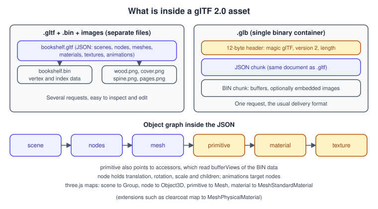
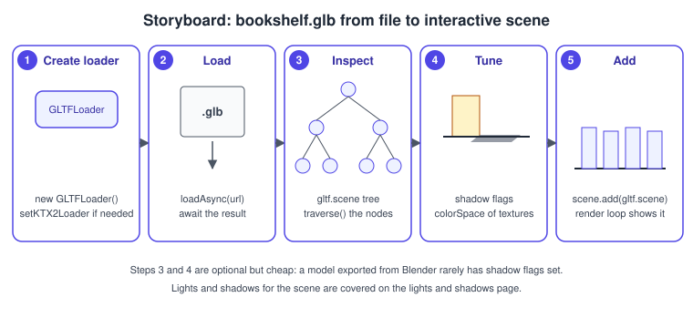
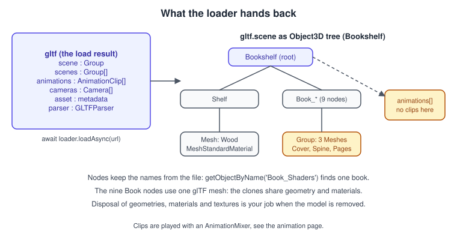
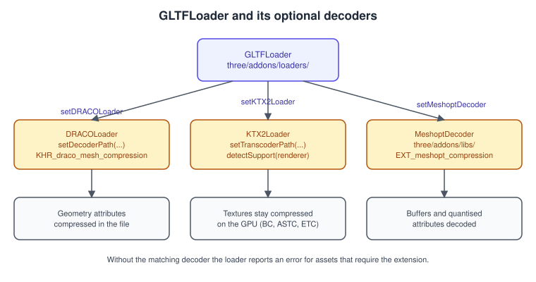

Loading Models and glTF in three.js
|
This content was generated with the assistance of AI and should be verified against the official documentation before being relied on in production. |
A renderer draws triangles, but artists make books, shelves and characters in tools such as Blender, and something has to carry that work to the browser. In 2012 every library had its own answer; today the answer for three.js, and for most of the web, is glTF 2.0, "the JPEG of 3D": a compact, royalty-free Khronos format designed for efficient transmission and loading by real-time engines. This page explains the format, the loader and its options, the three compression schemes, a production asset pipeline and the legacy loaders, and it loads the Bookshelf model in a complete example.
The facts were checked in November 2026 against three.js r187 (npm three@0.187.0), its API documentation and the Khronos glTF 2.0
specification. The loaders live in the three/addons/ package path and work with both WebGLRenderer and WebGPURenderer. Everything
runs in any evergreen browser with WebGL 2 (Chrome 56, Firefox 51, Safari 15 or newer); GPU texture compression formats depend on the
device, and the section on KTX2 explains how that is handled. The examples use Vite and ES modules, as set up in
three.js Getting Started.
This is the first step of the Bookshelf three.js track: the shelf and nine books come from the shared asset
bookshelf.glb (a glTF 2.0 binary of about 70 KB with embedded PNG textures; the reader can produce KTX2
versions of the textures with toktx or ktx create, as shown below). The next steps are
Materials and PBR,
Lights and Shadows and the click-to-pull-out interaction in
Interaction, Picking and Controls. The format-neutral background
is in Scene Graphs and Asset Formats.
Why glTF
Before glTF, a web 3D project chose between a format that was easy to author but heavy to parse (OBJ, Collada), a vendor format that needed a proprietary SDK (FBX), or a library-specific JSON that only one tool could write. glTF removes the parsing work at load time:
-
geometry is stored as binary buffers in exactly the layout the GPU wants, so loading copies bytes instead of parsing text;
-
the material model is physically based (metallic-roughness), which maps directly to
MeshStandardMaterialandMeshPhysicalMaterial; -
scenes, node hierarchies, skins, morph targets, animations, cameras and punctual lights are part of the format;
-
it is extensible: compression, texture formats and advanced material features are registered extensions with the
KHR_,EXT_or vendor prefix; -
it is a Khronos open standard, so the same file works in Blender, three.js, Babylon.js, Unity importers, Unreal importers and viewers.
The spec fixes the conventions that make files portable: a right-handed coordinate system, +Y up, +Z as the front of the asset, and metres as the unit. These match three.js, so no axis conversion is needed on load; if a model looks 100 times too large or too small, the exporter used another unit.
Inside a glTF asset

A glTF asset exists in two forms:
| Form | Files | When to use it |
|---|---|---|
|
A JSON document, one or more |
Authoring, version control and debugging: the JSON is readable and individual textures can be swapped. |
|
A single binary container: a 12-byte header (magic |
Delivery. One HTTP request, no relative paths to break, and the usual output of exporters for the web. |
The JSON describes a graph. A scene lists root nodes; a node holds a transform (translation, rotation, scale, or a matrix)
and children, and may reference a mesh, a camera, a skin or a light. A mesh is a list of primitives; each primitive points to
accessors (typed views into buffers) for its attributes and indices and to one material, whose textures point to image files.
Animations target node properties by path. Because the GLB header is so simple, the first example reads it directly, which shows
what the loader receives before any parsing:
// Reads the 12-byte GLB header and the chunk table of bookshelf.glb.
const response = await fetch( '/bookshelf.glb' );
const buffer = await response.arrayBuffer();
const view = new DataView( buffer );
const magic = view.getUint32( 0, true ); // 0x46546C67, the ASCII bytes "glTF"
const version = view.getUint32( 4, true ); // 2
const length = view.getUint32( 8, true ); // total byte length of the file
console.log( magic === 0x46546C67, version, length === buffer.byteLength );
let offset = 12;
while ( offset < length ) {
const chunkLength = view.getUint32( offset, true );
const chunkType = view.getUint32( offset + 4, true );
const name = chunkType === 0x4E4F534A ? 'JSON' : chunkType === 0x004E4942 ? 'BIN' : 'other';
console.log( name, chunkLength, 'bytes' );
if ( name === 'JSON' ) {
const json = JSON.parse( new TextDecoder().decode( new Uint8Array( buffer, offset + 8, chunkLength ) ) );
console.log( json.asset, json.nodes.map( ( n ) => n.name ) );
}
offset += 8 + chunkLength;
}Loading with GLTFLoader
GLTFLoader is an addon, imported explicitly. Its load method takes callbacks; the inherited loadAsync returns a promise and is the
form to use in modern code.
import { GLTFLoader } from 'three/addons/loaders/GLTFLoader.js';
const loader = new GLTFLoader();
const gltf = await loader.loadAsync( '/bookshelf.glb' );
scene.add( gltf.scene );Source: three.js docs: GLTFLoader

The loader API, from the documentation:
| Member | What it does |
|---|---|
|
Constructor. The optional |
|
Starts loading. The URL may be a data URI. |
|
Promise form of |
|
Parse an already loaded |
|
Provide the decoders for the compression extensions. Each returns the loader, so they can be chained. |
|
Add or remove a plugin that handles an extension the loader does not know. This is how third-party extension packages work. |
|
Options inherited from |
The result object
load resolves with a plain object, not a three.js Object3D. Its fields:
| Field | Type | Contents |
|---|---|---|
|
|
The default scene of the file. This is what you normally add to your scene. |
|
|
All scenes of the file. A glTF can hold several. |
|
|
Every animation of the file, ready for an |
|
|
Cameras defined in the file. Rarely used in apps, useful for matching the author’s framing. |
|
|
The |
|
|
The internal parser, for advanced access to the raw definitions. |
|
|
Extra data from the file (the |

The conversion maps glTF concepts to three.js classes: a node becomes an Object3D (or Group), a mesh primitive becomes a Mesh
(a glTF mesh with several primitives becomes a Group of meshes, which is why a Bookshelf book is a group of three meshes: cover,
spine and pages), a skin becomes a Skeleton with a SkinnedMesh, a material becomes a MeshStandardMaterial (or
MeshPhysicalMaterial when an extension such as clearcoat is used), and node names are kept in name, so
gltf.scene.getObjectByName( 'Book_Shaders' ) returns that book. The scene-graph classes are explained in
Scene Graph and Transforms.
Things the loader does for you, and which you should not repeat:
-
colour textures (base colour, emissive) are tagged
SRGBColorSpace; data textures (normal, roughness, metalness, occlusion) keep no colour space, so the colour management of the renderer works without any change (see Textures and Color Management); -
textures use
flipY = false, matching glTF’s top-left UV origin; do not flip them again; -
meshes with the same glTF mesh are cloned and share geometry and materials, which keeps memory low.
A complete Bookshelf loader
The example below adds progress reporting through a LoadingManager, an HTML overlay, error handling, the shadow flags from the
previous page, a bounding-box fit of the camera and a log of what was loaded. It is the entry point src/main.js of the Vite project,
with bookshelf.glb in the public folder.
<!doctype html>
<html lang="en">
<head>
<meta charset="utf-8" />
<meta name="viewport" content="width=device-width, initial-scale=1" />
<title>Bookshelf GLB</title>
<style>
html, body { margin: 0; height: 100%; background: #15171c; color: #e5e7eb; font: 14px sans-serif; }
canvas { display: block; width: 100%; height: 100%; }
#status { position: fixed; left: 12px; top: 12px; }
</style>
</head>
<body>
<div id="status">Loading 0 %</div>
<script type="module" src="/src/main.js"></script>
</body>
</html>import {
AmbientLight, Box3, DirectionalLight, LoadingManager, PerspectiveCamera,
Scene, Vector3, WebGLRenderer,
} from 'three';
import { GLTFLoader } from 'three/addons/loaders/GLTFLoader.js';
import { OrbitControls } from 'three/addons/controls/OrbitControls.js';
const status = document.getElementById( 'status' );
const renderer = new WebGLRenderer( { antialias: true } );
renderer.setPixelRatio( Math.min( window.devicePixelRatio, 2 ) );
renderer.setSize( window.innerWidth, window.innerHeight );
renderer.shadowMap.enabled = true;
document.body.appendChild( renderer.domElement );
const scene = new Scene();
const camera = new PerspectiveCamera( 45, window.innerWidth / window.innerHeight, 0.05, 50 );
const controls = new OrbitControls( camera, renderer.domElement );
scene.add( new AmbientLight( 0xffffff, 0.6 ) );
const sun = new DirectionalLight( 0xffffff, 2.5 );
sun.position.set( 1.5, 2.5, 2 );
sun.castShadow = true;
scene.add( sun );
// The LoadingManager counts every request that goes through the loaders using it.
const manager = new LoadingManager();
manager.onProgress = ( url, loaded, total ) => {
status.textContent = `Loading ${ Math.round( 100 * loaded / total ) } %`;
};
manager.onError = ( url ) => {
status.textContent = `Could not load ${ url }`;
};
const loader = new GLTFLoader( manager );
try {
const gltf = await loader.loadAsync( '/bookshelf.glb' );
const model = gltf.scene;
// glTF carries no shadow flags: set them on every mesh.
model.traverse( ( o ) => {
if ( o.isMesh ) {
o.castShadow = true;
o.receiveShadow = true;
}
} );
scene.add( model );
// Frame the model, whatever its size or origin.
const box = new Box3().setFromObject( model );
const size = box.getSize( new Vector3() );
const centre = box.getCenter( new Vector3() );
const distance = size.length() / ( 2 * Math.tan( ( camera.fov * Math.PI ) / 360 ) );
camera.position.copy( centre ).add( new Vector3( 0, size.y * 0.2, distance * 1.2 ) );
controls.target.copy( centre );
controls.update();
console.log( gltf.asset.generator, gltf.animations.length, 'clips' );
model.traverse( ( o ) => console.log( o.type, o.name ) );
status.textContent = 'Loaded ' + model.children.length + ' root children';
} catch ( error ) {
console.error( error );
status.textContent = 'Failed: ' + error.message;
}
window.addEventListener( 'resize', () => {
camera.aspect = window.innerWidth / window.innerHeight;
camera.updateProjectionMatrix();
renderer.setSize( window.innerWidth, window.innerHeight );
} );
renderer.setAnimationLoop( () => renderer.render( scene, camera ) );Four details of this code matter beyond the example. Box3.setFromObject needs world matrices, which exist after the model is added
to the scene and rendered or after model.updateMatrixWorld( true ). The LoadingManager reports totals of the requests known so far,
so the percentage can jump when a file references more resources. The try/catch is needed because loadAsync rejects for network,
parse and unsupported-extension errors alike. And the loaded / total text is for demonstration: a production page would show a progress
bar and hide it in manager.onLoad.
Loading from a file input or a worker
parseAsync accepts bytes you obtained yourself, which is how drag-and-drop viewers work. The base path is needed only for external
resources; a self-contained .glb can pass an empty string.
dropZone.addEventListener( 'drop', async ( event ) => {
event.preventDefault();
const file = event.dataTransfer.files[ 0 ];
const buffer = await file.arrayBuffer();
const gltf = await new GLTFLoader().parseAsync( buffer, '' );
scene.add( gltf.scene );
} );
dropZone.addEventListener( 'dragover', ( e ) => e.preventDefault() );Compression: Draco, Meshopt and KTX2
A glTF file is already compact, but a real model is dominated by two things: vertex data and textures. glTF has extensions for
compressing both, and GLTFLoader supports them when given the matching decoder.

| Extension | Compresses | Decoder in three.js | Trade-off |
|---|---|---|---|
|
Triangle meshes (positions, normals, UVs, indices) |
|
Usually the smallest geometry. The data must be decoded to normal buffers at load time, which costs CPU and temporarily memory. |
|
Vertex and index buffers, and optionally animation data |
|
Decodes very quickly, and the result stays friendly to further compression with gzip or brotli on the server. Slightly larger than Draco for geometry in many cases. |
|
Textures, stored as KTX2 containers with Basis Universal data (UASTC or ETC1S) |
|
Textures stay compressed in video memory: roughly four times less (or better) than an 8-bit RGBA PNG, plus mipmaps. Transcoding needs the Basis transcoder files. |
Note that PNG and JPEG shrink the download, but the GPU needs raw pixels: a 2048 by 2048 PNG of 200 KB still occupies about 22 MB of
video memory with mipmaps. KTX2 shrinks both. The loader also supports EXT_texture_webp and EXT_texture_avif for smaller downloads,
and EXT_mesh_gpu_instancing, which it converts into an InstancedMesh, plus material extensions such as clearcoat, transmission,
volume, iridescence, anisotropy and KHR_materials_unlit.
Decoder setup
The decoders are small programs that ship with three.js under node_modules/three/examples/jsm/libs/. The Draco and Basis files must
be served as static files, so copy them into the public folder (or let your build copy them) and tell the loaders where they are.
import { GLTFLoader } from 'three/addons/loaders/GLTFLoader.js';
import { DRACOLoader } from 'three/addons/loaders/DRACOLoader.js';
import { KTX2Loader } from 'three/addons/loaders/KTX2Loader.js';
import { MeshoptDecoder } from 'three/addons/libs/meshopt_decoder.module.js';
// Copy node_modules/three/examples/jsm/libs/draco/ to public/draco/
// and node_modules/three/examples/jsm/libs/basis/ to public/basis/ first.
export function createGltfLoader( renderer, manager ) {
const draco = new DRACOLoader( manager );
draco.setDecoderPath( '/draco/' );
const ktx2 = new KTX2Loader( manager );
ktx2.setTranscoderPath( '/basis/' );
ktx2.detectSupport( renderer ); // asks the GPU which compressed formats it can sample
return new GLTFLoader( manager )
.setDRACOLoader( draco )
.setKTX2Loader( ktx2 )
.setMeshoptDecoder( MeshoptDecoder );
}
// Usage
// const loader = createGltfLoader( renderer );
// const gltf = await loader.loadAsync( '/bookshelf-compressed.glb' );
// draco.dispose(); ktx2.dispose(); // when no more models will be loadedSource: three.js docs: GLTFLoader (setDRACOLoader, setKTX2Loader, setMeshoptDecoder), three.js docs: KTX2Loader, three.js docs: DRACOLoader
Pitfalls specific to the decoders:
-
The decoders are loaded only when needed. A file without Draco never fetches the Draco files, so a wrong decoder path stays hidden until the first compressed model.
-
Call
ktx2.detectSupport( renderer )with the renderer you render with, before the first load. WithWebGPURenderer, firstawait renderer.init(); thedetectSupportAsyncmethod was deprecated in r181. -
DRACOLoader.setDecoderConfig()was deprecated in r185, and the migration guide says the loader is expected to move to WebAssembly only. Set just the decoder path. -
Compressed glTF files fail with a clear error when the matching decoder is missing; check the console rather than the network panel.
-
KTX2 textures do not use
flipY, and their colour space still comes from the glTF slot they are used in.
An asset pipeline from Blender to the browser
The steps in practice:
-
Export from Blender. In Blender, File > Export > glTF 2.0 (.glb/.gltf) is the exporter maintained by Khronos and bundled with Blender. For the web choose the glTF Binary (.glb) format and keep +Y Up on, apply modifiers, include only what the page needs (cameras and lights usually not), and enable mesh compression only if the page sets up the Draco decoder. Materials should use the Principled BSDF node with image textures, because only that setup exports faithfully to the metallic-roughness model.
-
Optimise. Tools such as glTF-Transform (named here as a commonly used open-source tool, not an official one) can remove duplicate accessors and unused resources, quantise attributes, resize textures and apply compression. A typical call is
npx @gltf-transform/cli optimize bookshelf.glb bookshelf-opt.glb; its options select the mesh and texture compression. -
Convert textures. The reference encoder for KTX2 is the Khronos KTX-Software package. A typical command line, here for a colour texture with generated mipmaps, is
toktx --t2 --genmipmap --encode uastc cover.ktx2 cover.png; newer releases also offerktx create. Check the tool’s--helpfor your installed version because option names changed between releases. The Bookshelf textures published with this section are PNG, so this step is exercised by the reader. -
Validate. The Khronos glTF Validator reports invalid accessors, missing textures and unsupported extensions before they turn into confusing runtime errors.
-
Serve. Serve
.glband.ktx2with long-lived cache headers and a content hash in the file name; serve.glbwith gzip or brotli when it is not already compressed by Meshopt or Draco. Decoder files can be cached for a year.
Working with the loaded model
Finding and reusing parts
Nodes keep the names from the file. Use getObjectByName for a known node, and traverse to visit everything. The Bookshelf nodes are
Shelf and Book_Algorithms, Book_Shaders, Book_Meshes, Book_Light, Book_Pixels, Book_Textures, Book_Cameras,
Book_Physics and Book_Leaning, under a root named Bookshelf.
import { clone } from 'three/addons/utils/SkeletonUtils.js';
const shaders = gltf.scene.getObjectByName( 'Book_Shaders' );
shaders.position.z += 0.08; // pull the book out of the shelf
// Reuse the model several times. Plain Object3D.clone() is enough for static meshes
// (geometry and materials are shared); SkeletonUtils.clone is required with skinned meshes.
const spare = clone( shaders );
spare.position.set( 0.6, 0.0, 0.2 );
scene.add( spare );Source: three.js docs: SkeletonUtils
A clone shares geometry and materials with the original, so editing a shared material changes every copy. Give each clone its own
material when it needs its own colour (mesh.material = mesh.material.clone()). For hundreds of identical objects use an
InstancedMesh (see Geometry) or a file that uses EXT_mesh_gpu_instancing.
Animations
The animations array holds AnimationClip objects ready for a mixer. bookshelf.glb has none, so the pull-out clip of the track is
created in code in the animation page; for a file that has clips the pattern is:
import { AnimationMixer, Timer } from 'three';
const mixer = new AnimationMixer( gltf.scene );
const clip = gltf.animations.find( ( c ) => c.name === 'PullOut' );
if ( clip ) mixer.clipAction( clip ).play();
const timer = new Timer();
renderer.setAnimationLoop( ( time ) => {
timer.update( time );
mixer.update( timer.getDelta() );
renderer.render( scene, camera );
} );Source: three.js docs: AnimationMixer
Replacing materials and textures
The imported materials are ordinary three.js materials. Common adjustments are overriding envMapIntensity (or setting
scene.environment), switching a material to double-sided for thin geometry, or replacing the whole material for a custom effect:
gltf.scene.traverse( ( o ) => {
if ( ! o.isMesh ) return;
const materials = Array.isArray( o.material ) ? o.material : [ o.material ];
for ( const m of materials ) {
if ( m.name === 'Cover' ) m.roughness = 0.55; // names come from the glTF materials
if ( m.map ) m.map.anisotropy = renderer.capabilities.getMaxAnisotropy();
}
} );Disposal
three.js does not garbage-collect GPU resources. When a model is removed for good, release its geometries, materials and textures:
function disposeModel( root ) {
root.traverse( ( o ) => {
if ( ! o.isMesh ) return;
o.geometry.dispose();
const materials = Array.isArray( o.material ) ? o.material : [ o.material ];
for ( const m of materials ) {
for ( const value of Object.values( m ) ) {
if ( value && value.isTexture ) value.dispose();
}
m.dispose();
}
} );
root.removeFromParent();
}Shared geometry and materials must be disposed once, when the last user is gone; disposing early makes other clones re-upload.
The full lifecycle, including renderer.info checks, is in
Performance and Disposal.
Other formats
glTF is the recommended format, but the repository of addon loaders still contains the others. They are each a parser for a file format that was designed for exchange between modelling tools, not for loading in real time.
| Format | Loader (under three/addons/loaders/) |
Notes |
|---|---|---|
OBJ and MTL |
|
Text geometry and a separate material file. No hierarchy, animation or PBR. The two loaders work together, replacing the old combined |
FBX |
|
Autodesk’s proprietary format, common in game asset stores. It handles skinning and animation but has no PBR standard, and the file size is large. |
COLLADA (.dae) |
|
An XML exchange format from Khronos. It still works but is no longer the recommended exchange format. |
STL, PLY |
|
Geometry-only formats from 3D printing and scanning. They return a |
three.js JSON |
|
Reads the output of |
If the source is FBX or OBJ, converting it once to glTF (Blender, or the FBX2glTF and obj2gltf command-line tools) and shipping the result is almost always better than shipping the original and a runtime loader.
Pitfalls
| Symptom | Usual cause |
|---|---|
Black or flat-looking model |
No lights and no environment in the scene; glTF materials are physically based and need light. |
Textures too dark or washed out |
A colour texture was loaded by hand with the wrong |
Model 100 times too large or small |
The exporter used centimetres or another unit. Fix the scale at export or set it once on |
CORS error for textures of a |
External images on another origin without CORS headers. Use a |
"Missing decoder" or Draco/KTX2 errors |
The decoder path is wrong, or |
Loading works locally and fails when deployed |
Absolute paths such as |
Hitch when the model first appears |
Shader compilation and texture upload happen at the first render. Pre-warm with |
Memory grows when models are swapped |
Disposal was skipped for removed models. |
Model appears in the wrong position in the scene |
glTF nodes may carry transforms; the root keeps them. Wrap |
Performance notes
-
Ship one
.glbper asset, compressed. Fewer requests and smaller files beat everything else on mobile networks. -
Prefer Meshopt for large animated or skinned assets, Draco where geometry size dominates, and KTX2 for any texture larger than about 512 by 512 pixels. Always generate mipmaps in the tool, not at load time.
-
Use
renderer.compileAsync( scene, camera )after adding the model to avoid a first-frame stall, and load models while a loading screen is shown. -
Reduce draw calls at export: merge meshes that share a material, and keep material count low. A book with three materials draws three times; nine books therefore cost 27 draw calls plus the shelf.
-
Load heavy parts lazily: a low-resolution model first and the detailed one after the first frame, or use the
LODobject. See Performance and Disposal.
Where the books are outdated
The three books cover model loading in chapters that no longer apply: WebGL: Up and Running (PAR) ch. 7 and chapter 3 on its own JSON and COLLADA loaders, Learning Three.js 2nd edition (LTJ) ch. 8 and the Three.js Cookbook (TCB) ch. 1, 2 and 7.
| Book statement or code | Today |
|---|---|
Load a model with a three.js-specific JSON or binary format written by the three.js Blender exporter (PAR ch. 7, LTJ ch. 8, TCB ch. 1-2) |
Use glTF 2.0 with |
Load COLLADA as the standard exchange format (PAR ch. 7) |
COLLADA is no longer the recommended format; use glTF. |
CTM, AWD, Babylon and AssimpJSON loaders (LTJ ch. 8) |
Removed between r108 and r110. |
|
|
|
|
|
|
|
ES module imports from |
Run from a |
A development server such as Vite and import maps or a bundler; |
|
A glTF mesh with several primitives becomes a group of meshes; three.js also supports material arrays with geometry groups (r85). |
Skinned and morphed models require |
Flags removed in r129 and r130; support is automatic. Animation uses |
No compression or only gzip |
Draco, Meshopt and KTX2 are standard glTF extensions, with decoders in the addons. |
Source: three.js Migration Guide
References
-
glTF 2.0 specification: https://registry.khronos.org/glTF/specs/2.0/glTF-2.0.html; glTF overview: https://www.khronos.org/gltf/
-
Khronos glTF Validator: https://github.com/KhronosGroup/glTF-Validator; KTX-Software: https://github.com/KhronosGroup/KTX-Software
-
three.js documentation: https://threejs.org/docs/pages/GLTFLoader.html, https://threejs.org/docs/pages/DRACOLoader.html, https://threejs.org/docs/pages/KTX2Loader.html, https://threejs.org/docs/pages/LoadingManager.html
-
three.js manual: https://threejs.org/manual/#en/loading-3d-models, https://threejs.org/manual/#en/cleanup
-
three.js Migration Guide: https://github.com/mrdoob/three.js/wiki/Migration-Guide
-
Blender manual, glTF 2.0: https://docs.blender.org/manual/en/latest/addons/scene_gltf2.html
-
Tony Parisi, WebGL: Up and Running (O’Reilly, 2012): https://www.oreilly.com/library/view/webgl-up-and/9781449326487/
-
Jos Dirksen, Learning Three.js, 2nd edition (Packt, 2015): https://www.packtpub.com/en-us/product/learning-threejs-the-javascript-3d-library-for-webgl-second-edition-9781784392215
-
Jos Dirksen, Three.js Cookbook (Packt, 2015): https://www.packtpub.com/product/threejs-cookbook/9781783981182